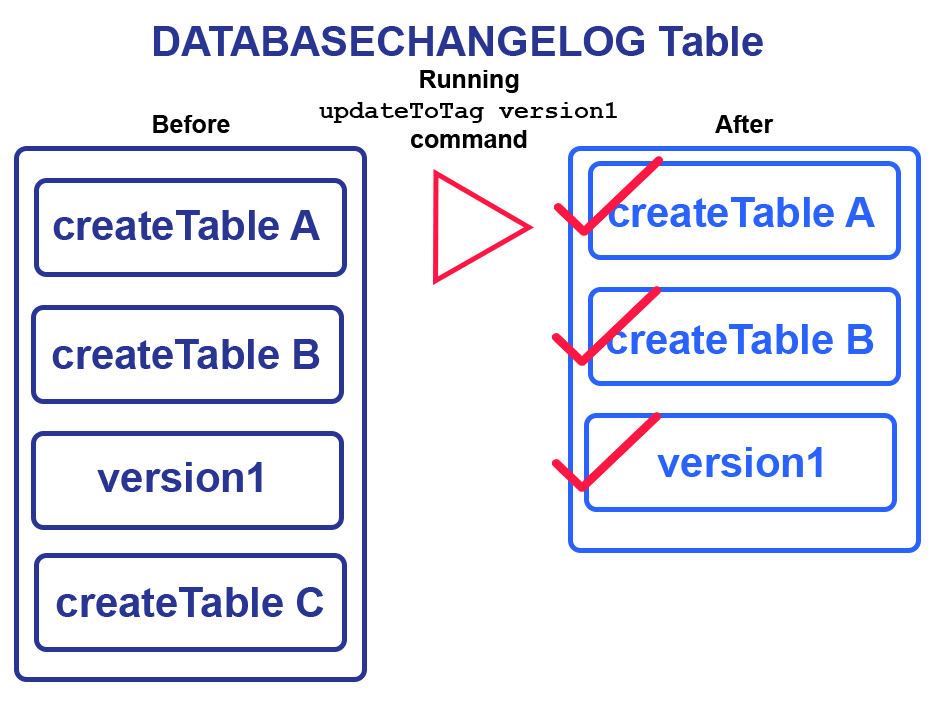

update-to-tag
The update-to-tag command applies sequential changes to your database from the newest
The update-to-tag command is mainly used to apply changes sequentially, starting with the
The update-to-tag command will deploy changes only when you have update-to-tag command with the reference to a tag created in the tag command.
The following image shows that if you run the update-to-tag command with the tag version1, which should be specified in the tagDatabase createTable A, createTable B, and version1 without deploying createTable C.

Currently, the tagDatabase
<?xml version="1.0" encoding="UTF-8"?>
Additionally, it is best practice to run the update-to-tag-sql helper command to inspect the update-to-tag SQL, so you can correct any issues that may arise before running the command.
update-to-tag commandTo run the update-to-tag command, specify the driver, classpath, and URL in the
Then run the update-to-tag command:
liquibase update-to-tag --tag=myTag --changelog-file=example-changelog.xmlupdate-to-tag global | Definition | Requirement | |
|---|---|---|
--changelog-file * |
|
Required |
--url
|
|
Required |
--username
|
|
Required |
--password
|
|
Required |
*
update-to-tag command | Definition | Requirement | |
|---|---|---|
--tag
|
|
Required |
--rollback-on-error=[boolean]
|
|
Optional |
Liquibase Version: 4.9.1
Liquibase Community 4.9.1 by Liquibase
Running Changeset: example-changelog.sql::1::your.name
Running Changeset: example-changelog.sql::2::your.name
Running Changeset: example-changelog.sql::3::other.dev
Liquibase command 'update-to-tag' was executed successfully.